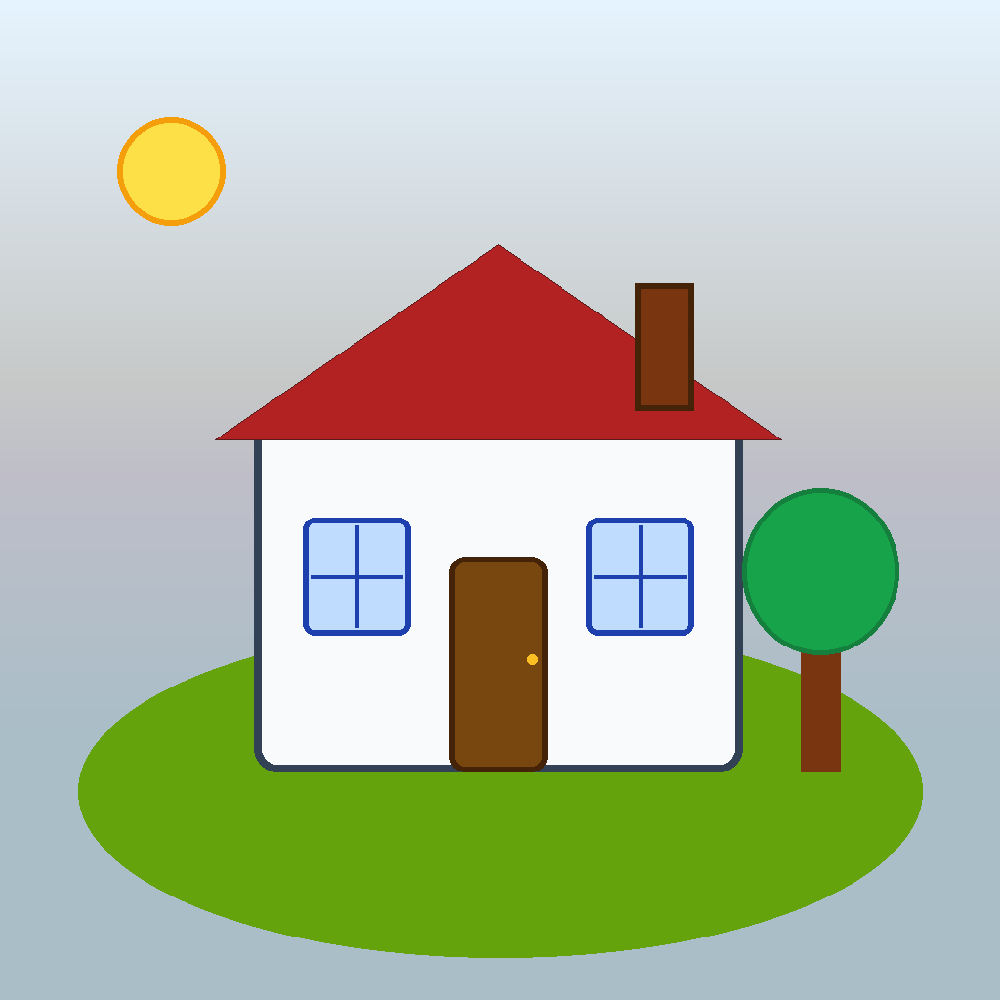

TENANTFLOW
Automatiza la captura, control y comunicación de facturas de suministros para gestión de alquileres.
1ª Píldora · TenantFlow
Mensaje clave
No hace falta ser programador para impulsar mejoras reales con IA. Hace falta detectar bien un problema, explicarlo con claridad, iterar y medir.
Problema inicial
La liquidación mensual de suministros a un inquilino era manual, fragmentada y propensa a errores: descarga de facturas en 4 proveedores, traspaso a Excel, envío por WhatsApp y seguimiento en banco.
- Riesgo de duplicados, olvidos y cruces manuales incorrectos.
- Dependencia de memoria y tiempo disponible.
- Baja trazabilidad para comprobar cobros.
- Carga mental sostenida por tareas pendientes.
Qué hace TenantFlow
Vigila carpeta INBOX y detecta nuevos PDFs de facturas y recibos.
Evita duplicados con hash SHA-256 por archivo.
Lee proveedor, fecha, periodo, importe, referencia y tipo de suministro.
Permite correcciones, conciliación de estado y registro de banco/reembolso.
Genera informe PDF por selección, informe anual acumulado y pack de pendientes.
Envía correo desde Mail de macOS con adjuntos y CCO para trazabilidad.
Impacto operativo
| Antes | Ahora |
|---|---|
| Control documental manual y disperso | Proceso centralizado y trazable |
| Duplicados y olvidos frecuentes | Deduplicación y extracción automática |
| Proceso largo y pospuesto | Flujo simplificado en minutos |
| Comunicación manual por WhatsApp | Informe + pack + email en un único flujo |
Cronología resumida
- MVP: INBOX + base de datos + deduplicación + extracción base.
- Interacción: paso de herramienta técnica a app visual con botones.
- Calidad de datos: ajustes por proveedor para elevar precisión.
- Gobierno de datos: nuevos campos de control y conciliación.
- Usabilidad e informes: tabla operativa + salida documental profesional.
- Automatización final: envío contextual de email con adjuntos.
Qué debe llevarse un directivo no técnico
- La IA es una palanca de productividad real en administración, comercial y soporte.
- Se puede liderar sin programar, si se define bien el proceso y el criterio de éxito.
- Los pilotos acotados reducen miedo y generan evidencia interna rápida.
- El mejor modelo de adopción: negocio propone y IT industrializa.